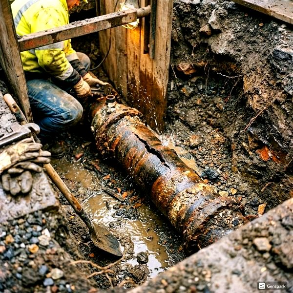
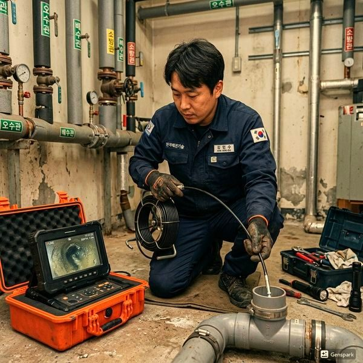

하수구에서 벌레가 올라올 때 - 종류별 대처법
2026년 4월 12일 | 제우스시설관리
하수구에서 벌레가 올라오는 것은 단순히 불쾌한 문제가 아니라, 배관 시스템에 결함이 있다는 경고입니다. 정상적인 배관에서는 트랩의 봉수(물 막이)가 벌레와 냄새를 차단합니다. 벌레가 나타난다면 어딘가에 틈이 있는 것입니다.

하수구에서 자주 발견되는 벌레: ① 나방파리: 2~3mm 크기, 날개가 하트 모양, 배관 내 유기물에서 번식. ② 먹줄벌레(배수구파리): 가늘고 긴 형태, 습한 환경 선호. ③ 바퀴벌레: 배관을 통로로 이용, 봉수가 파괴된 배수구로 침입. ④ 지네·그리마: 습한 환경을 찾아 배관을 통해 유입.
종류별 대처법: 나방파리와 먹줄벌레는 서식지인 배관 내 바이오필름을 제거해야 근본 해결됩니다. 고압세척기로 배관을 세척하면 서식지가 사라져 자연히 없어집니다. 바퀴벌레는 트랩 봉수를 유지하고 배관 틈새를 밀봉하면 침입을 차단할 수 있습니다.
응급 처치로 미사용 배수구에 물을 부어 봉수를 채우세요. 배수구 뚜껑을 덮어 물리적으로 차단하고, 배관 주변 틈새를 실리콘으로 밀봉하세요. 살충제는 임시방편일 뿐, 배관 내부 문제를 해결하지 못합니다.

제우스시설관리는 내시경 카메라로 벌레 서식지를 직접 확인하고, 고압세척기로 배관 내부를 완벽히 세척하여 근본 원인을 제거합니다. 28분 내 출동, 전화: 010-4406-1788